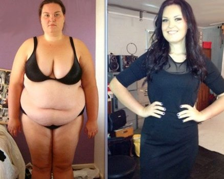

Ciao ragazze! Vi siete accorte tutte che sono dimagrita un sacco e avete cominciato a tempestarmi di domande . Ho fatto del mio meglio per rispondervi e supportarvi tutte, ma non ci sono riuscita (per rispondere a così tanti messaggi dovrei vivere online). Così, ho deciso di scrivere questo post per dare risposta alla domanda da un milione di dollari: "Come sei riuscita a perdere 31 kg?" (Attenzione, con questo non voglio assolutamente dire che non mi dovete scrivere o chiedere qualcosa, è solo che mi semplifica la vita).
La mia trasformazione è durata solo DUE MESI! RISULTATO INCREDIBILE, NON TROVATE ANCHE VOI?

Non sono mai stato magrissima, ma avevo notato che continuavo a ingrassare. Mi erano comparsi tre orribili rotolini sulla pancia che mi facevano sembrare un bulldog in bikini e i fianchi, le gambe e il sedere stavano diventando sempre più grandi! Ho deciso che dovevo ottenere un corpo sano e in forma a tutti i costi , così ho smesso di mangiare cibi grassi e fritti e ho rinunciato alle cene abbondanti a tarda ora. Ho iniziato a fare jogging al mattino e sessioni di allenamento in palestra di sera, ma invece di perdere peso, continuavo a prenderne sempre di più! Dopo un mese il mio peso aveva raggiunto un numero terribile: QUASI 100 KG! Ho quindi deciso di rendere la mia dieta ancora più rigida, escludendo carne, pane, pasta e dolci. Mangiavo solo frutta e verdura e non bevevo altro che acqua. Ho persino provato dei tè e delle pillole dimagranti costosissime ma sembrava che niente funzionasse per me : dopo un po', infatti, il mio corpo esausto riprendeva tutto il peso perso.
Né le diete né le pillole sono efficaci, sono solo una fregatura!
Gli allenamenti, invece, sono
troppo difficili e ci vuole troppo tempo per vedere i progressi. Allora, che fare?
Dopo una valanga di diete, pillole e ore passate in palestra e migliaia di euro sborsati al mio personal trainer, mi sono arresa completamente. Poi un giorno mi sono imbattuta in un articolo su : diceva che questa polvere a base di estratto di tè matcha, taurina ed estratto di succo di limone rimuove le tossine dall'organismo, accelera il metabolismo, aiuta il corpo a bruciare i grassi 3-4 volte più velocemente, aumenta l'energia e normalizza il colesterolo. Avevo anche sentito dire che Demi Moore, Katy Perry, J-Lo e molte altre celeb stavano dimagrendo con questo integratore. Sarò sincera con voi: ero abbastanza scettica, ma, sinceramente, dopo aver provato di tutto e vista la mia disperazione, non avevo nulla da perdere, così ho deciso di provarlo! Inoltre, avevo controllato le recensioni ed erano davvero impressionanti!
Milioni di donne in Europa e negli Stati Uniti si sono sbarazzate dei chili in più grazie a . Stando alle ricerche, il 96,7% ha perso dai 12 ai 17 kg in tre settimane!

Ormai avevo deciso! Sono andata sul loro sito web , ho ricontrollato tutto e ho ordinato l'integratore, che è arrivato nel giro di un paio di settimane. Ho letto le istruzioni e iniziato a prenderlo una volta al giorno, aggiungendo un cucchiaino di polvere in un bicchiere di acqua calda (150 ml) e attendendo che la polvere si fosse sciolta completamente prima di berlo.
Risultati
Dopo appena due settimane i miei risultati erano sorprendenti: avevo perso 6 kg! Il gonfiore era sparito e il mio incarnato era migliorato un sacco! Inoltre, i fianchi e la pancia si erano ridotti notevolmente e il mio umore era migliorato! Ho cominciato a credere che sarei potuta diventare di nuovo bella senza né diete né allenamenti! Così, ho ripreso a mangiare tutto quello che volevo! Ne avevo abbastanza di fare la fame e di allenarmi...
Alla fine della terza settimana avevo perso altri 12 kg! Ero più in forma, il che mi motivava a fare le scale invece di usare sempre l'ascensore. Quello che sembrava essere un duro allenamento si era rivelato un vero piacere per me! Non riuscivo a credere che fosse successo solo perché stavo seguendo le semplici istruzioni riportate sulla confezione di questo integratore! Se c'ero riuscita io, chiunque poteva farcela! Erano passati solo due mesi e i miei 31 kg in più erano spariti!
Ho raggiunto il mio peso forma in 60 giorni. La pancia è sparita, sono dimagrita di 31 kg e ho un fisico che non avrei mai nemmeno osato sognare !
A proposito, è stato testato dall'Accademia Nazionale di Scienze nel 2014. I risultati sarebbero stati una bomba, ma non sono mai stati resi pubblici, probabilmente perché altrimenti avrebbero fatto fallire aziende farmaceutiche, centri fitness, nutrizionisti e cliniche carissime! Del resto, non c'è da stupirsi: costa una pipa di tabacco!
Adesso continuo a consigliare alle mie amiche e colleghe. Importante: ordinatelo dal sito web ufficiale del produttore , altrimenti potreste ricevere un falso. Sono soddisfatta dei miei risultati e credo che anche voi lo sarete! Dimenticatevi gli stereotipi: non servono né diete né allenamenti per avere una bella silhouette!
P.S. Se anche voi avete perso peso con questo integratore, non esitate a condividere i vostri risultati qui sotto! Aiuterete a convincere altre persone che è davvero efficace! Un abbraccio!
Ehilà! Ho una fantastica notizia! I rappresentanti dell'azienda mi hanno contattata per offrire uno sconto del 50% alle prime 100 visitatrici del mio blog che effettueranno un ordine qui!
Commenti
Cara Isabella, grazie per avermi ispirata a sbarazzarmi finalmente di quei terribili kg di troppo. Sono passate tre settimane e ho perso 28 kg. Ora il mio peso è di 57 kg e, proprio come avevi detto tu, non è più fluttuante. Ti auguro tante belle cose, Caterina.
Ho sognato un corpo magro per molto tempo, avevo letto di su questa pagina tre mesi fa. Ho esitato a ordinarlo, ma poi mia mamma mi ha convinta. Non è poi così caro per un sogno che si avvera! Ora entrambe stiamo perdendo peso... anche se lei ha più successo di me =(
sono felicissima di aver trovato questo blog.sicuramente proverò questo integratore !grazie
Ehi Isa! Ho seguito il tuo consiglio e ho provato che dire... hai salvato la mia famiglia e il mio matrimonio =) Isabella sei una ragazza fantastica! Mio marito è cambiato molto nei miei confronti di recente e io ho acquisito fiducia in me stessa... Ora sto ALLA GRANDE! =)
Ragazze presto anche io mi uniro allo squadrone delle magre!! Ho appena ricevuto il mio ! Grazie per aver condiviso i vostri risultati: mi hanno motivata a iniziare un ciclo di trattamento. Spero di sbarazzarmi finalmente di tutto questo grasso. Anche io vi raccontero i miei progressi qui. Baci a tutte!
Ciao Nicole! Sono molto felice per te! La cosa più importante è l'armonia interiore, ma è impossibile raggiungerla se non si è in armonia con il proprio corpo. Non vedo l'ora di vedere i tuoi primi progressi. E ricorda: meglio fare piccoli progressi che non farne nessuno! In bocca al lupo!
Ciao Isa! Sono molto contenta di aver trovato questo sito web e vorrei avere il tuo aiuto. Ho provato molti metodi di dimagrimento, ma purtroppo i risultati sono stati inferiori alle mie aspettative. Sono alta 1,52 cm e peso 97 kg, una vergogna!!! Devo perdere almeno 36 kg e sembra essere la mia ultima spiaggia....
Ciao Carlotta! Non sono l'unica a essere dimagrita bevendo questo integratore ! Anche le mie amiche l'hanno provato e FUNZIONA, quindi ti garantisco al 100% che non rimarrai delusa un'altra volta. Siamo tutte soddisfatte dei nostri risultati e ti auguro il nostro stesso successo!
Signore, vi prego ancora una volta di dedicare un paio di minuti per condividere i vostri risultati, perché la condivisione è amore! Potrebbe essere proprio il vostro messaggio a convincere qualcun'altra a diventare finalmente magra, bella e felice!!
Lo ricevuto ieri e oggi inizio una nuova vita! Non vedo l'ora di vedere i primi progressi :)
ciao isabella grazie mille! sono dimagrita molto velocemente ma la cosa piu importante e che il peso perso non torna piu come prima! e un miracolo! ho consigliato questa polvere dimagrante anche alle mie amiche perche non ce la faccio piu a vederle morire di fame
Domani ho un appuntamento vado a cena in un posto elegante. Qualche settimana fa il solo pensiero di andare fuori a mangiare senza sapere quante calorie contenessero le pietanze sarebbe stato un incubo ma ora non mi interessa! So che posso mangiare quello che voglio senza più ingrassare. Ho perso 27,5 kg in un solo mese con l'aiuto di ! Grazie Isabella Marchi!
Cavoli Maria davvero sei dimagrita cosi tanto in 1 mese?forse anche io dovrei prendere ... ho preso altri 3 kg non ne posso piu...
Ho perso 18 kg in 6 settimane!!! Incredibile! Grazie Isabella!!!!
complimenti Alessia! il tuo risultato e straordinario!ora non ho piu dubbi su !!!
Condivido i miei risultati come promesso. Questa polvere è eccellente Sono riuscita a perdere quasi 15 kg dopo 6 settimane. WOW!
Dimenticatevi tutti i dubbi, questa cosa funziona davvero! Anche una mia amica ha perso peso con : circa 18 kg in 2 mesi se non sbaglio. Impressionante, no?
Grazie per le vostre recensioni, ragazze! Mi avete motivata a ordinare e a lavorare per migliorare me stessa! Ho già perso 5 kg, me ne mancano solo altri 6 e poi avrò raggiunto il mio peso forma!
Le mie tre cugine sono cambiate completamente dopo aver bevuto questo integratore dimagrante per un paio di mesi. Da normali ragazze oversize sono diventate uno schianto!
Ecco alcuni dei miei risultati: ho perso 12,5 kg senza andare una sola volta in palestra! Sono tutti davvero stupiti =)
Ciao Grazia! Sono molto felice per te, ma se non ricordo male volevi dimagrire un altro po'. Comunque questo è un ottimo inizio! Vai avanti così! In bocca al lupo!
Ciao Isabella! Ho letto il tuo post e ho deciso di ordinare . A breve mi ritroverò con i miei compagni delle superiori, è da un sacco che non ci vediamo e mi sarei vergognata a presentarmi con i miei 115 kg (!!!!) e indossando una XXL!!! Quando avevo 17 anni ero magra.... Ora peso 68 kg e ho comprato un abito taglia M per la serata. Devo migliorare ancora molto, ma ti sono davvero grata per avermi dato una motivazione per iniziare! Saluti!
I tuoi risultati sono semplicemente incredibili... ma ho capito bene che non serve mettersi a dieta? Sono schifata al solo pensiero di seguire una dieta low-carb o simile... basta morire di fame vi prego!
Anna, hai capito bene. Con non devi seguire nessun piano dietetico. Sappiamo tutti che, non appena una dieta viene interrotta, il peso ritorna; questo non succederà mai se prendi . Quindi non preoccuparti, provalo e vedrai!
Non posso fare a meno di condividere le mie foto!!! Ho perso 20 kg dopo due mesi!!!!! Questo integratore è stata la mia salvezza ! Io e mio marito siamo in seconda luna di miele :)
Ho iniziato a prendere questo integratore dimagrante 2 mesi fa e ho gia perso 23 kg. Mi vergogno a dire che prima pesavo 90 kg e non avevo il coraggio di andare in spiaggia quando ero in vacanza...
devo assolutamente perdere 14 kg al piu presto... mi sono imbattuta in questo sito web e sono rimasta affascinata da tutti i commenti delle ragazze e dai loro risultati... provero sicuramente questa polvere dimagrante vediamo cosa succede :) auguratemi in bocca al lupo!
Mia sorella mi ha comprato un paio di confezioni di in Giappone l'anno scorso. All'inizio ho pensato che fosse una cretinata (come si può perdere peso senza seguire una dieta e fare esercizio?) ma mi ha convinta a provarlo... Non avrei mai pensato che funzionasse sul serio... Ho iniziato a prendere questo integratore a febbraio e a maggio HO DOVUTO CAMBIARE COMPLETAMENTE IL MIO GUARDAROBA! Tutti i vestiti mi stavano grandissimi!!!! Sono dimagrita da 92 a 58 kg in meno di 2 mesi!!!!!! Sono passati 2 anni da allora ma il mio peso non è cambiato!!! Adesso sono una ragazza felice!! Per tirare le somme provate questo integratore per un paio di settimane e vedrete...
Caspita Daniela, i tuoi risultati sono davvero impressionanti! Care signore, mi scuso per non essere riuscita a rispondere a tutte, ad ogni modo volevo assicurarvi che leggo tutti i messaggi e sono felice e orgogliosa di voi e dei vostri risultati!
È passato così tanto tempo che sembra quasi esilarante che pesassi 79 kg... Ora il mio peso è di 54 kg e, qualunque cosa faccia o mangi, non cambia! Sono orgogliosa di condividere con voi le foto dei miei progressi:
Un saluto a Isabella e a tutte coloro che hanno lasciato la propria recensione! Non ho parole per esprimere la mia gratitudine e felicita... Ho 33 anni e negli ultimi anni ho passato un inferno a causa del mio peso. Anche lallenamento piu semplice rappresentava una sfida per me avevo un terribile mal di schiena mi indebolivo e mi stancavo subito... Ho letto i vostri post ho deciso di provare e i risultati si sono rivelati molto al di sopra delle mie aspettative! Ora peso 63 kg ma prima ne pesavo 91! Ho perso 28 kg in tre mesi! Mi sento benissimo come se fossi ringiovanita di 10 anni! Non soffro piu ne di dispnea ne di mal di schiena!
Ho bevuto del tè giapponese dimagrante che mi ha davvero aiutata a perdere 2 chili, ma dopo 2 settimane li ho ripresi :-( Per favore potete dirmi se succede la stessa cosa con ?
Ciao Luisa. Non ti preoccupare, non succederà. Basta guardare le mie foto e quelle di tutte queste bellissime donne: abbiamo perso peso velocemente e da allora non abbiamo più ripreso un grammo! Gli ingredienti di questo integratore funzionano davvero: aiutano a rimuovere le tossine dall'organismo, accelerare il metabolismo, bruciare i grassi 3-4 volte più velocemente, aumentare l'energia e normalizzare il colesterolo. Prova ad assumere anche solo per una settimana e vedrai subito il suo effetto!